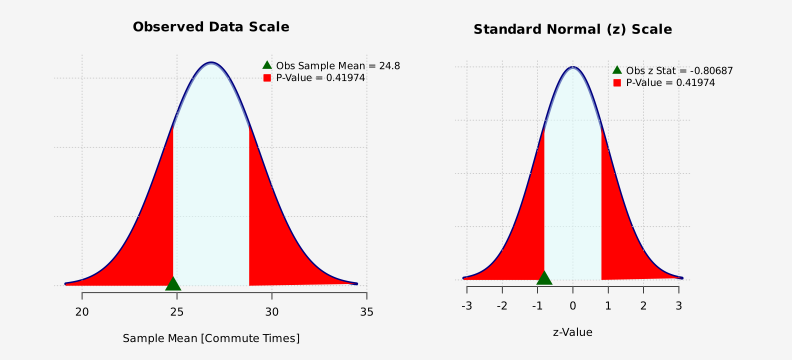
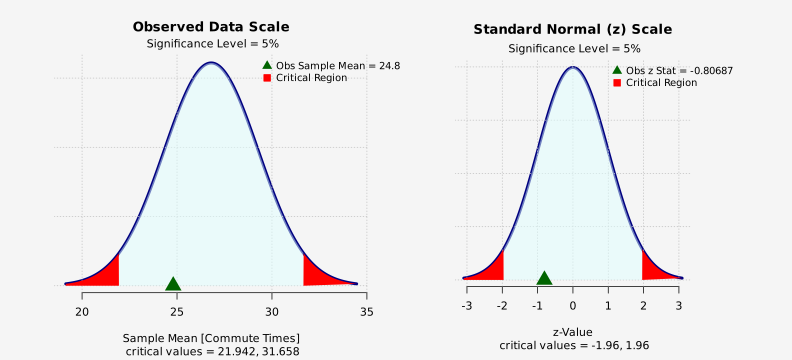

Data Summary
| Variable | Sample Size | Mean | Pop Std Dev |
|---|---|---|---|
| Commute Times | 15 | 24.8 | 9.6 |
Test of Hypothesis: z-Test
Commute Times
Alternative Hypothesis Ha: Mean of 'Commute Times' is not equal to 26.8
2.5% lower critical value in units of data = 21.941819
2.5% upper critical value in units of data = 31.658181
| Sample Mean | Std Error | Obs z Stat | 2.5% z-Lower Critical | 2.5% z-Upper Critical | P-Value |
|---|---|---|---|---|---|
| 24.8 | 2.47871 | -0.806872 | -1.95996 | 1.95996 | 0.419741 |
Test is not significant at 5% level.
P-value Graph: z-Test
Null density (in units of data): Normal; mean = 26.8 , sd = 2.4787
Alternative Hypothesis Ha: Mean of 'Commute Times' is not equal to 26.8

Critical Region Graph: z-Test
Null density (in units of data): Normal; mean = 26.8 , sd = 2.4787
Alternative Hypothesis Ha: Mean of 'Commute Times' is not equal to 26.8
